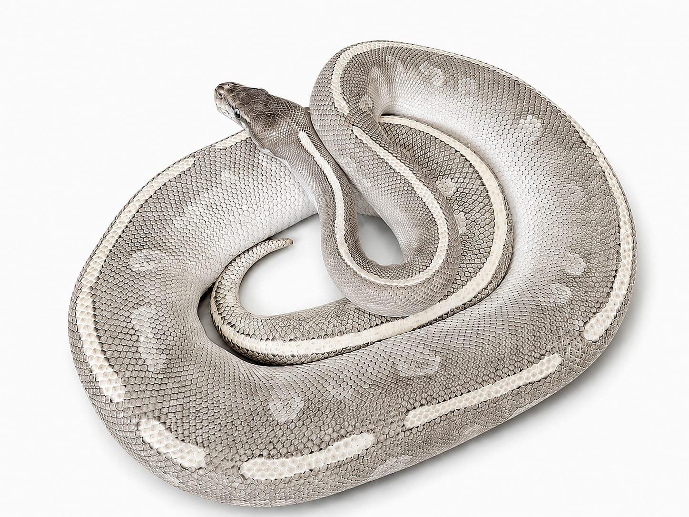

Especie: Ball Python
Sexo: Hembra
Morph: Mystic Potion
Año: 2024
Peso: 1,518 g
Origen: CODE
Procedencia: PIMVS YAHUI by César Rico
Estado: Adulta
Mystic Potion es el resultado de combinar los genes Mojave y Mystic, dos integrantes del Complejo Leucístico de Ojos Azules (BEL Complex).
En lugar de producir un ejemplar completamente blanco, esta combinación genera tonos grises, rosados y púrpuras, acompañados por una línea dorsal clara y ojos azul brillante.
Se trata de una de las combinaciones visuales más elegantes y distintivas dentro del complejo BEL.
Forma parte del Archivo Genético CODE como registro documental permanente.